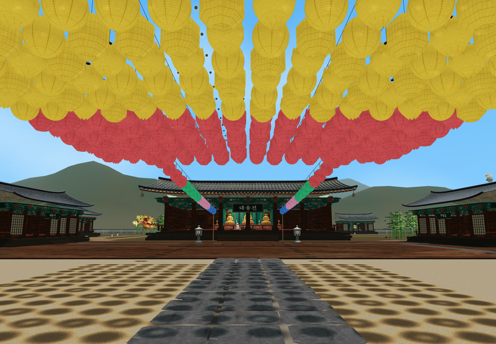
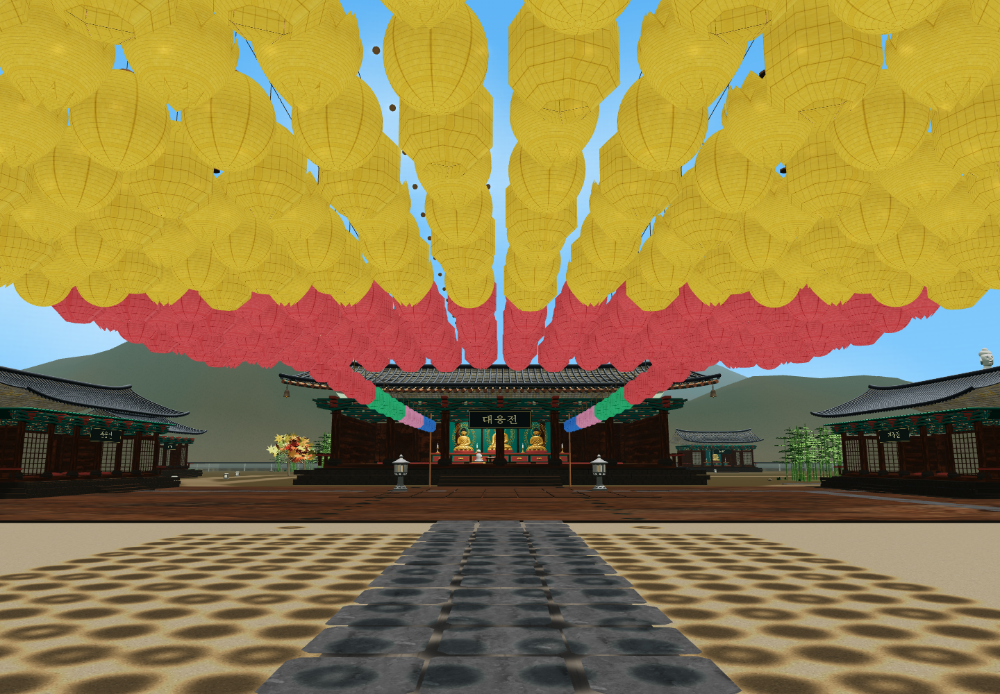
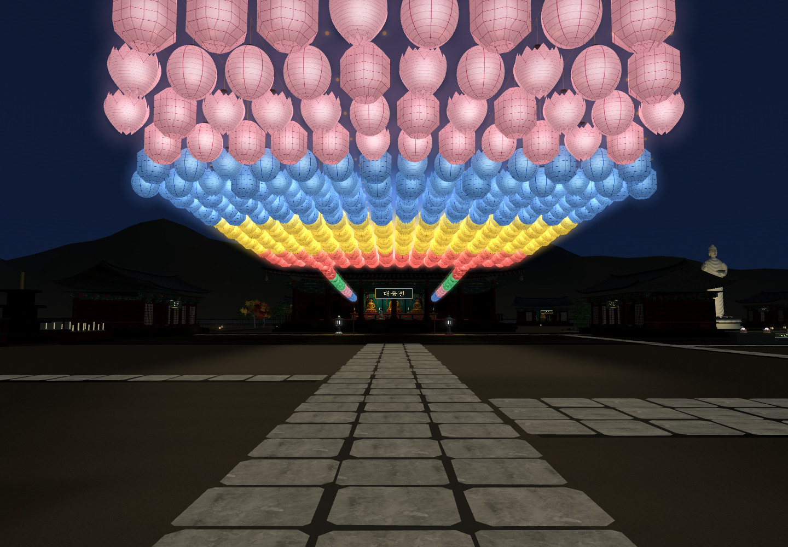
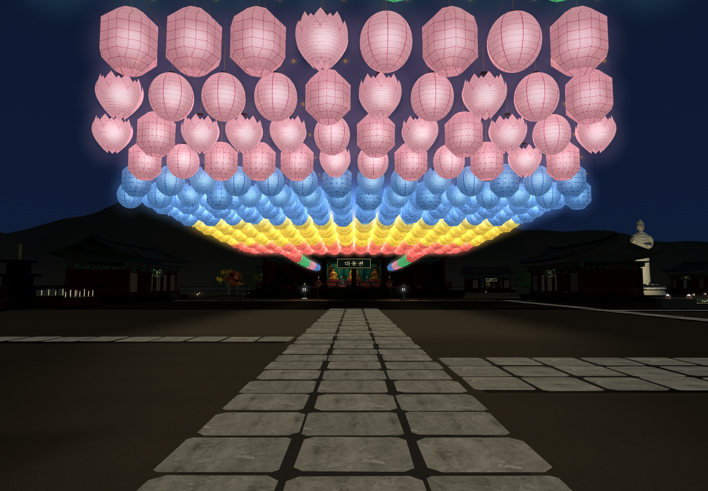

<meta charset="utf-8"><style>*{box-sizing:border-box}body{margin:0;background:#f5f3eb;color:#263f34;font-family:"Apple SD Gothic Neo",sans-serif}.sheet{width:1500px;padding:32px}h1{font-size:30px;margin:0 0 12px}p{font-size:19px;color:#687265;margin:0 0 22px}.row{display:grid;grid-template-columns:1fr 1fr;gap:20px;margin-bottom:24px}figure{margin:0}img{width:100%;display:block}figcaption{font-size:20px;font-weight:600;padding-top:10px}</style><section class="sheet"><h1>연등광장 높이 조정 · 같은 눈높이 전후</h1><p>천왕문 처마 연결은 유지 · 광장 안쪽 약 0.85~1m 낮춤 · 중앙은 살짝 처지게</p><div class="row"><figure><figcaption>변경 전 · 광장에서 본 대웅전</figcaption></figure><figure><figcaption>변경 후 · 연등 아래 걷는 느낌 보강</figcaption></figure></div><div class="row"><figure><figcaption>변경 전 · 천왕문 쪽 야간 모습</figcaption></figure><figure><figcaption>변경 후 · 낮아진 연등과 현판 시야</figcaption></figure></div><p>한지·색·빛·내 연등 LED 유지 · 이름표·줄·상세 표시 높이 정렬 · 보행 여유와 대웅전 현판 시야 확인</p></section>